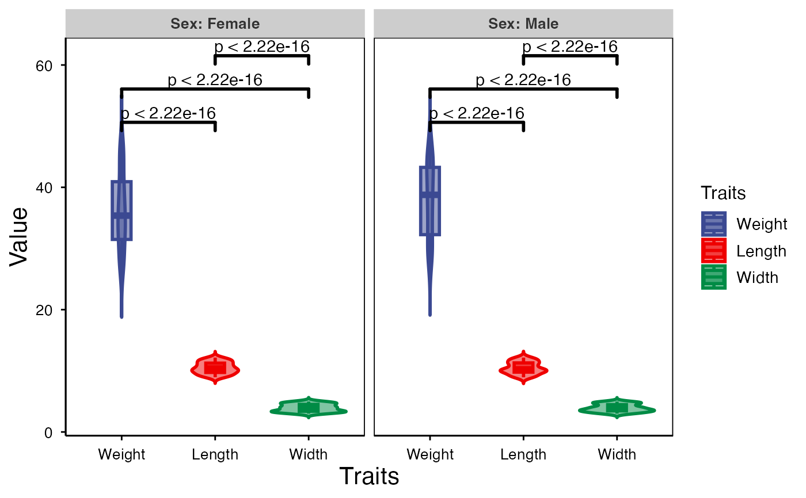
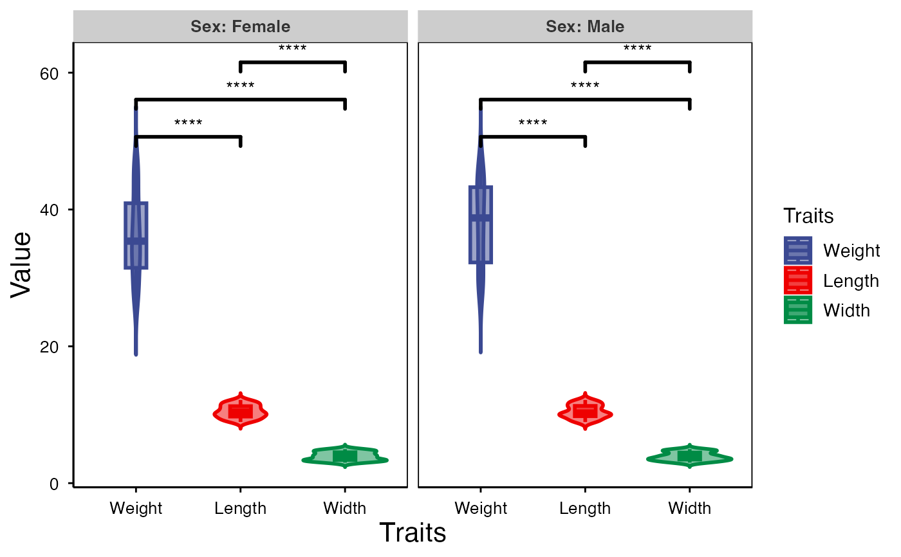
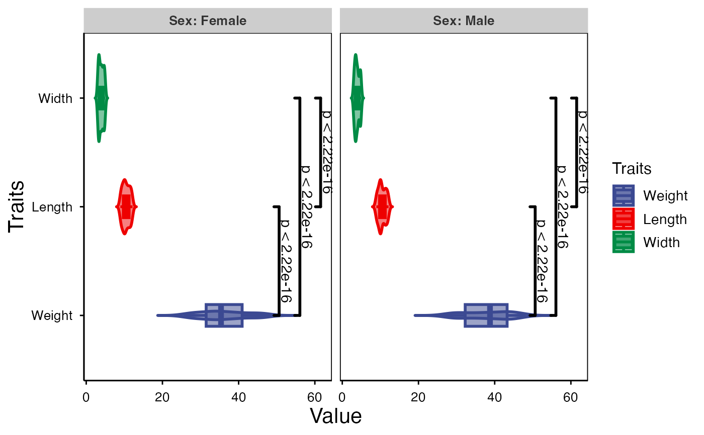
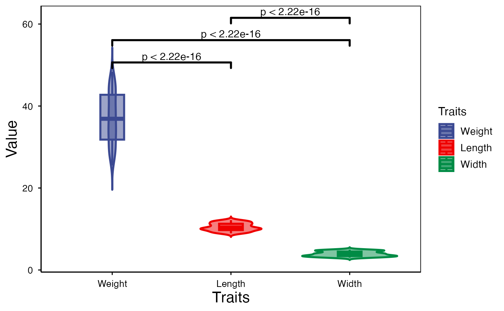
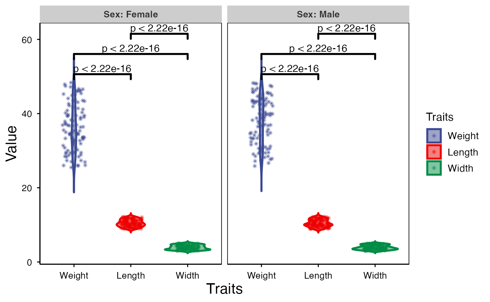

Violin plot support two levels and multiple groups with P value.
Source:R/violin_plot.R
violin_plot.RdViolin plot support two levels and multiple groups with P value.
Usage
violin_plot(
data,
test_method = "t.test",
test_label = "p.format",
group_level = "Three_Column",
violin_orientation = "vertical",
add_element = "boxplot",
element_alpha = 0.5,
my_shape = "plus_times",
sci_fill_color = "Sci_AAAS",
sci_fill_alpha = 0.5,
sci_color_alpha = 1,
legend_pos = "right",
legend_dir = "vertical",
ggTheme = "theme_publication"
)Arguments
- data
Dataframe: Length, Width, Weight, and Sex traits dataframe (1st-col: Value, 2nd-col: Traits, 3rd-col: Sex).
- test_method
Character: test methods of P value. Default: "t.test", options: "wilcox.test", "t.test", "anova", "kruskal.test".
- test_label
Character: test label of P value. Default: "p.format", options: "p.signif", "p.format". c(0, 0.0001, 0.001, 0.01, 0.05, 1).
- group_level
Character: group levels. Default: "Three_Column", options: "Two_Column", "Three_Column".
- violin_orientation
Character: violin orientation. Default: "vertical", options: "vertical", "horizontal", "reverse".
- add_element
Character: add new plot. Default: "boxplot", options: "none", "dotplot", "jitter", "boxplot", "point", "mean", "mean_se", "mean_sd", "mean_ci", "mean_range", "median", "median_iqr", "median_hilow", "median_q1q3", "median_mad", "median_range".
- element_alpha
Numeric: element color alpha. Default: 0.50, min: 0.00, max: 1.00.
- my_shape
Character: box scatter shape. Default: "plus_times", options: "border_square", "border_circle", "border_triangle", "plus", "times", "border_diamond", "border_triangle_down", "square_times", "plus_times", "diamond_plus", "circle_plus", "di_triangle", "square_plus", "circle_times","square_triangle", "fill_square", "fill_circle", "fill_triangle", "fill_diamond", "large_circle", "small_circle", "fill_border_circle", "fill_border_square", "fill_border_diamond", "fill_border_triangle".
- sci_fill_color
Character: ggsci color pallet. Default: "Sci_AAAS", options: "Sci_AAAS", "Sci_NPG", "Sci_Simpsons", "Sci_JAMA", "Sci_GSEA", "Sci_Lancet", "Sci_Futurama", "Sci_JCO", "Sci_NEJM", "Sci_IGV", "Sci_UCSC", "Sci_D3", "Sci_Material".
- sci_fill_alpha
Numeric: ggsci fill color alpha. Default: 0.50, min: 0.00, max: 1.00.
- sci_color_alpha
Numeric: ggsci border color alpha. Default: 1.00, min: 0.00, max: 1.00.
- legend_pos
Character: legend position. Default: "right", options: "none", "left", "right", "bottom", "top".
- legend_dir
Character: legend direction. Default: "vertical", options: "horizontal", "vertical".
- ggTheme
Character: ggplot2 themes. Default: "theme_publication", options: "theme_default", "theme_bw", "theme_gray", "theme_light", "theme_linedraw", "theme_dark", "theme_minimal", "theme_classic", "theme_void"
Examples
# 1. Library TOmicsVis package
library(TOmicsVis)
# 2. Use example dataset
data(traits_sex)
head(traits_sex)
#> Value Traits Sex
#> 1 36.74 Weight Female
#> 2 38.54 Weight Female
#> 3 44.91 Weight Female
#> 4 43.53 Weight Female
#> 5 39.03 Weight Female
#> 6 26.01 Weight Female
# 3. Default parameters
violin_plot(traits_sex)
#> Warning: The 'size' parameter for lines is deprecated in ggplot2 3.4.0+. Please use 'linewidth' instead to avoid this warning in future versions.

# 4. Set test_label = "p.signif",
violin_plot(traits_sex, test_label = "p.signif")
#> Warning: The 'size' parameter for lines is deprecated in ggplot2 3.4.0+. Please use 'linewidth' instead to avoid this warning in future versions.

# 5. Set violin_orientation = "horizontal"
violin_plot(traits_sex, violin_orientation = "horizontal")
#> Warning: The 'size' parameter for lines is deprecated in ggplot2 3.4.0+. Please use 'linewidth' instead to avoid this warning in future versions.

# 6. Set group_level = "Two_Column"
violin_plot(traits_sex, group_level = "Two_Column")
#> Warning: The 'size' parameter for lines is deprecated in ggplot2 3.4.0+. Please use 'linewidth' instead to avoid this warning in future versions.

# 7. Set add_element = "jitter"
violin_plot(traits_sex, add_element = "jitter")
#> Warning: The 'size' parameter for lines is deprecated in ggplot2 3.4.0+. Please use 'linewidth' instead to avoid this warning in future versions.
